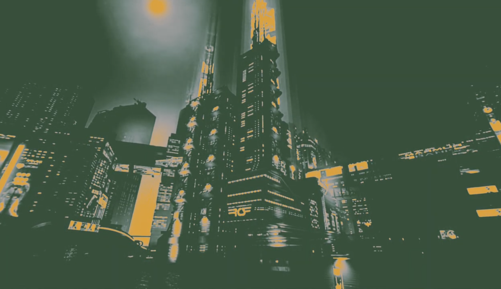

Pavel Ayala's Project



Description
A dystopian-themed project set in a cyberpunk world, focusing on rebellion and corporate corruption. The video introduces the characters and storylines, creating an immersive experience.
Categories
- Tiny Pic
- Foldable
- Time-Based Media
A small sticker of the logo worn by the main character, symbolizing rebellion
A storyboard booklet that outlines the video’s key scenes and themes.
An opening video or trailer that introduces the dystopian world and its main character.